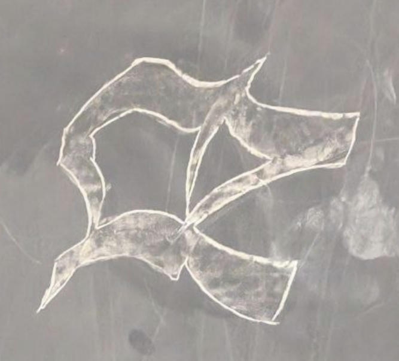

Dear monkeys, beavers, and in-betweens,
“Je ne jingyàn pas,” said a huge horde of elves before all died of plague.
Elvesmaxxing is a slippery slope that leads to embeavering.
Have found the \mathbb chalk!!!!! Also collectively composed first proem:
“Slept deeply on simple beds
Monkeys shall jingyan mind realms of beavers
Law gorps monkeys to retake holy land
¡Mathblackboardle life!
Happy wedding, but happier divorce
#stop stop beaver hate
Nescafé lṹrrrved we?
Miss.”
Have jingyung proem so much, and jingying for 5 years!
Also did pasbristol calligraphy of most pasbristol vowel /æ/:

Had to flee Lattimore 513 due to an attack by a mosquito! Returnle monkeys with a big army next week to retake holy land!
Until next time,
Hussein